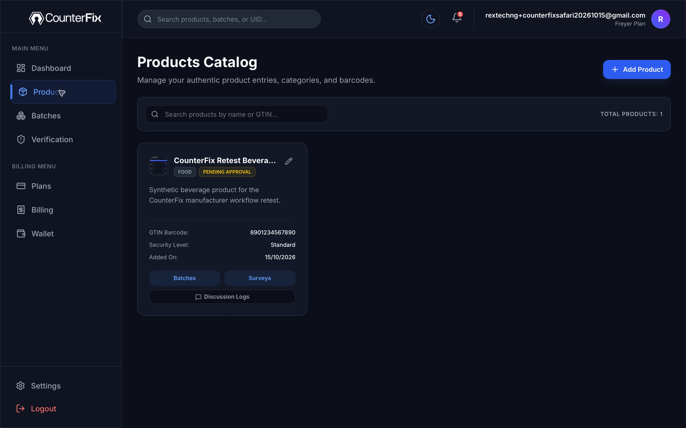
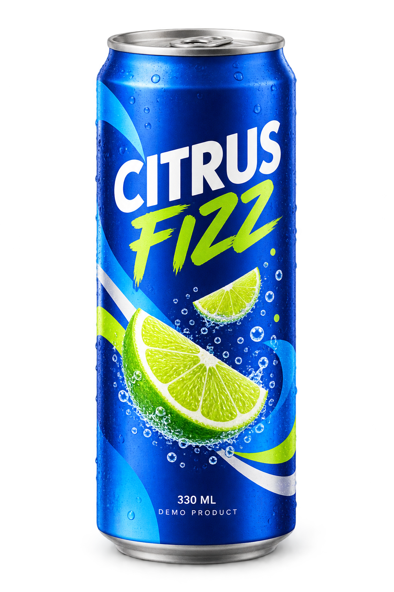
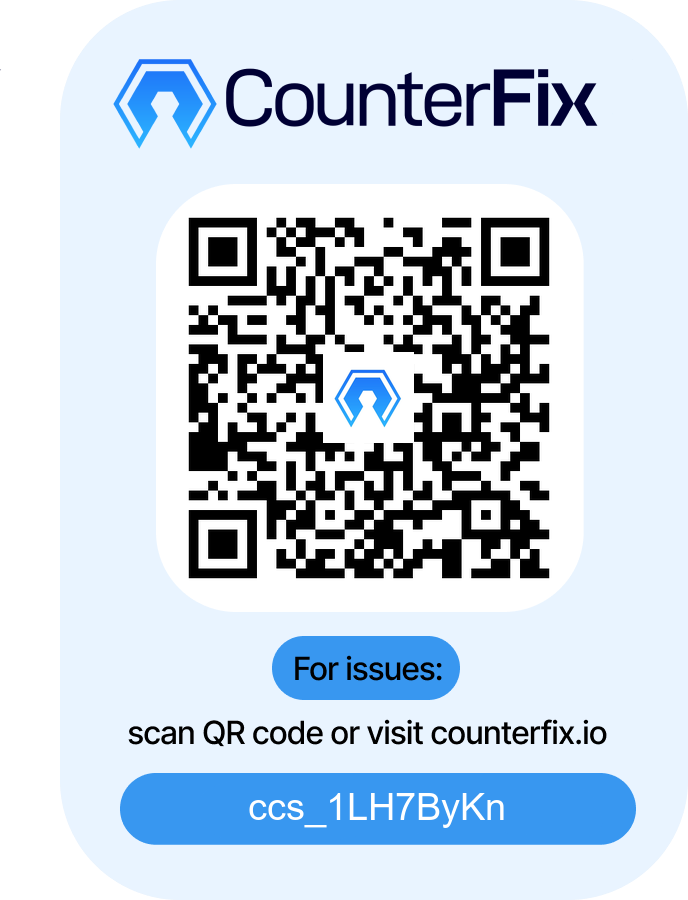
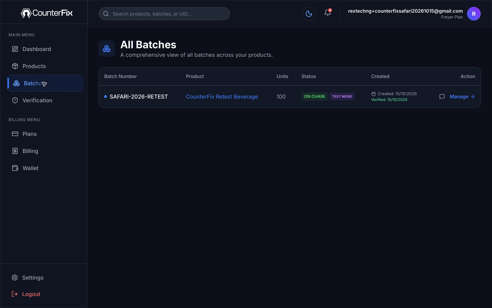
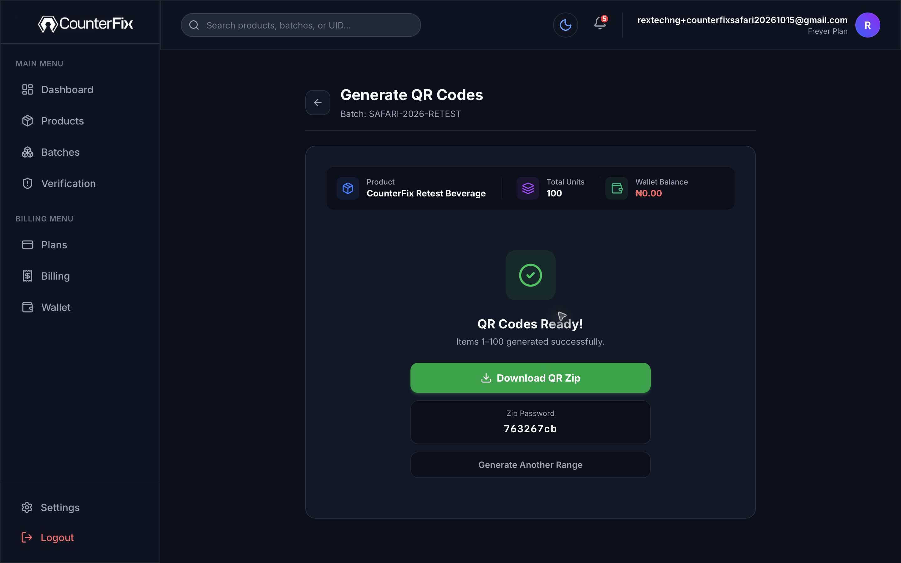
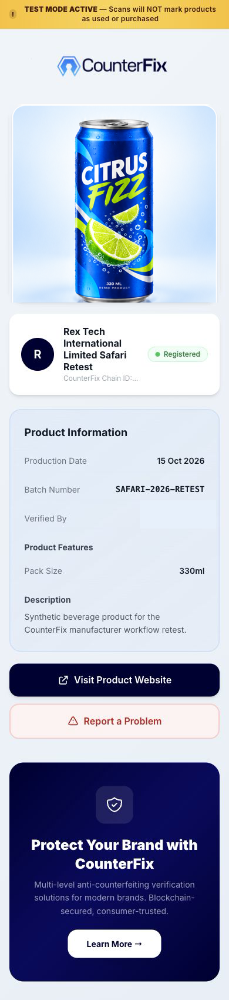

01
Set the foundation
Add your product.
Create a clear product record, ready for the batches you will manufacture.

For the people who make the product
Create a product. Build a batch. Generate a different QR code for every unit. Give customers a clear way to check the product in their hand.


A practical identity system for the products you already make.
Your operating path
CounterFix turns an important protection task into a straightforward workspace your team can run.
Set the foundation
Create a clear product record, ready for the batches you will manufacture.

Prepare the run
Organise the units you are about to put into market as one manageable batch.

Make each unit checkable
Create a distinct code for every unit in that batch, then apply each one to its corresponding pack.

The useful difference
A generic product page cannot tell a customer about the specific unit they are holding. CounterFix gives every pack its own identity, linked to the product and batch you set up.
When the pack leaves your hands
The QR code leads to a clear product-information experience. Customers can see the product and batch details you have made available.
The screen shown is an illustrative Test Mode product-information check. It does not represent a purchase-verification or reward flow.

Run it from one place
Build your catalogue, create batches, prepare codes and manage your account from your CounterFix workspace. Start small and add products as your operation grows.
Open your workspaceStart in the way that fits
Your plan and product activity are separate parts of the service. Choose a plan, then manage the product and code activity your business needs.
Free plans and paid subscriptions are available, with monthly and yearly options.
CounterFix may apply charges for product, code-generation and verification activity, depending on your setup.
Plan features, pricing and applicable charges require confirmation before they are published as specific terms.
Create your workspaceGood questions. Straight answers.
Everything starts with the product you make and the units you want customers to check.
Yes. Manufacturers can create an account online, complete business identity checks, then add products and batches in their own workspace.
No. CounterFix is designed for a different code on every unit in a batch, with each code applied to the pack it belongs to.
They can access the product-information experience for that pack, including the details you make available for the product and batch.
No. CounterFix helps connect a pack to its recorded product and batch information. It complements, and does not replace, required registrations or certifications.
Ready when your product is
Open your CounterFix workspace and build your first product record.
Create your account